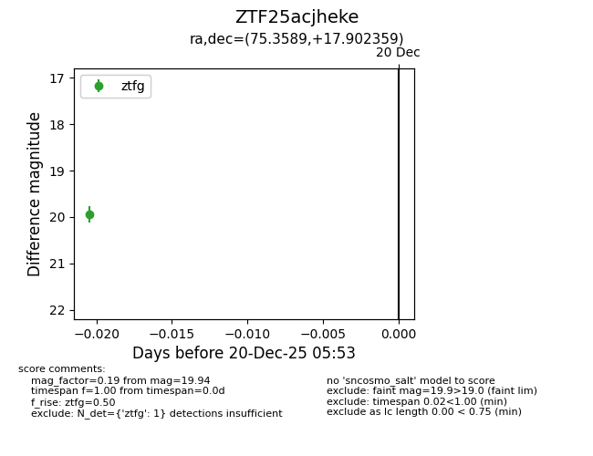
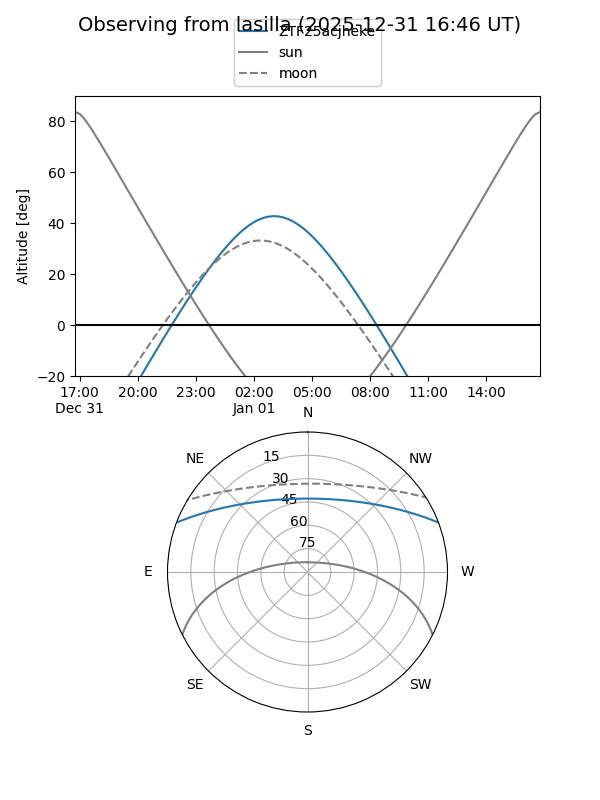
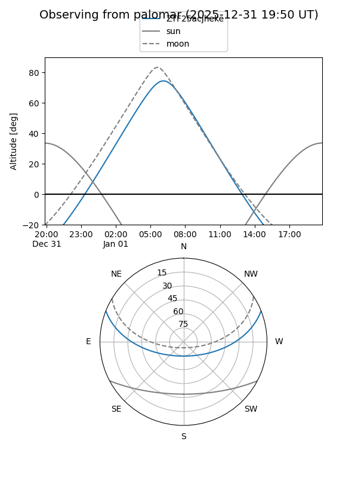

ZTF25acjheke
Target ZTF25acjheke at 2025-12-31 18:00
Aliases and brokers:
FINK: link
Lasair: link
ALeRCE: link
alt names
ZTF25acjheke (ztf,fink_ztf)
Coordinates:
equatorial (ra, dec) = 75.3589,+17.90236
equatorial (HMS+DMS) = 05:01:26.15,+17:54:08.49
galactic (l, b) = (183.6178,-14.53035)
Flags:
Photometry:
last ztfg=19.94
1 ztfg detections
Lightcurve

Visibility


Additional plots